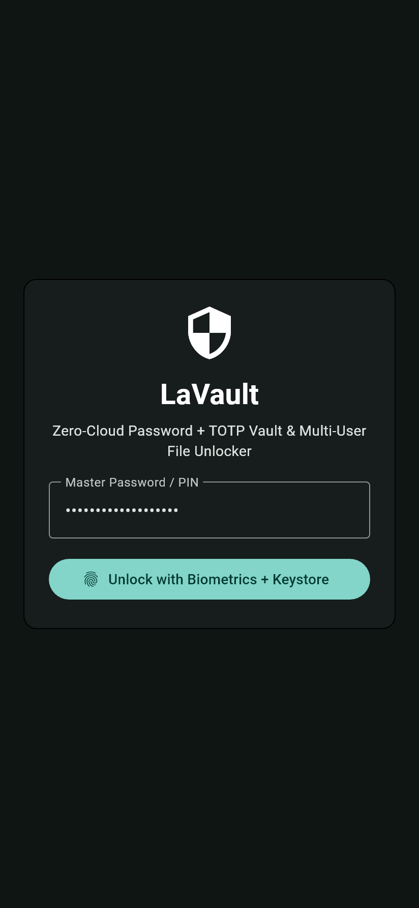
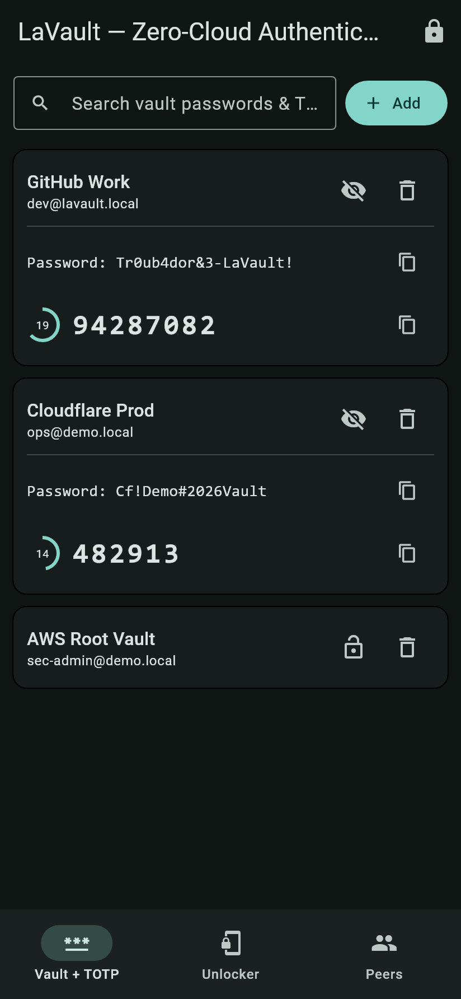
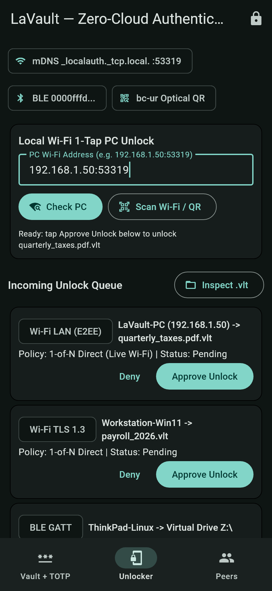
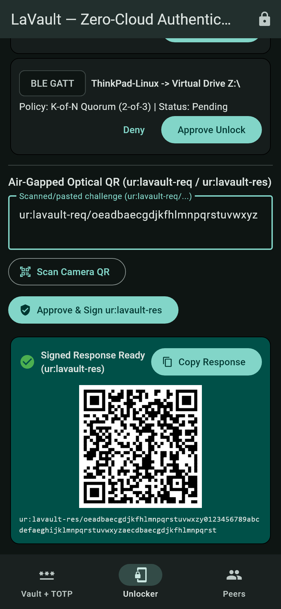
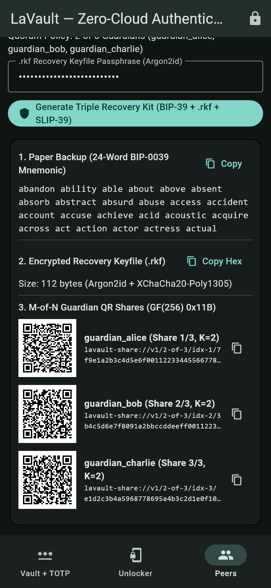
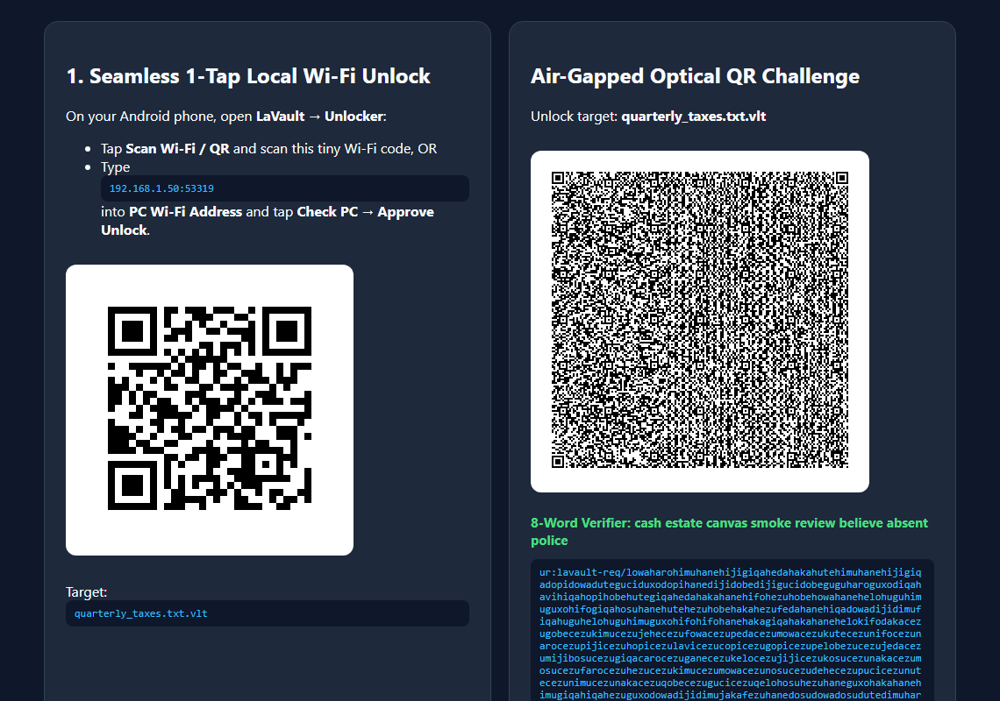
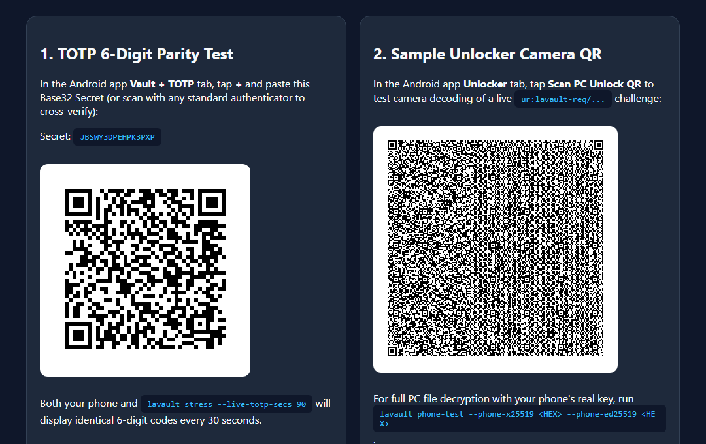
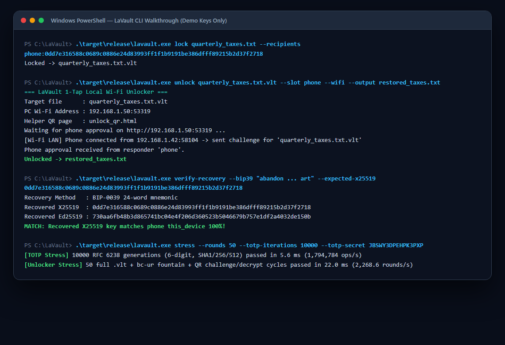

Your Phone Is Your Hardware Key & Vault
Store passwords and live 2FA codes behind device biometrics, lock PC files & folders into
tamper-evident .vlt containers, unlock over 1-tap LAN Wi-Fi or air-gapped QR codes,
and recover anytime with Triple Recovery.
Feature Walkthrough & Real Screenshots
Click any screenshot tab below or click an image to zoom in. All captures use synthetic demo keys and secrets.




ur:lavault-req challenges and generate signed ur:lavault-res QR responses.
.rkf, and M-of-N Shamir Guardian QR capsules in 1 tap.
unlock_qr.html presents both the Wi-Fi quick QR and optical fallback QR.

Biometric Lock, Password Vault & 3-Way TOTP Sync
Your master identity seed stays sealed inside SQLite (vault_meta:master_seed) keyed with Argon2id + hardware keystore secret so your phone key never changes across restarts.
- Unlock LaVault with Fingerprint / Biometrics + Master PIN.
- View stored entries or tap Add to add a service with a Base32 TOTP secret (SHA-1/256/512, 6/7/8 digits).
- Tap the lock icon on any card to reveal password + live countdown TOTP code; copy or delete anytime.
- Run
lavault.exe stress --live-totp-secs 120 --qr-html-out stress_qr.htmlon PC to confirm 3-way parity with external authenticators.
Seamless 1-Tap Local Wi-Fi File & Folder Unlocker
Your encrypted container (.vlt / .dir.vlt) stays on your PC while your phone acts as an offline hardware decryptor over local Wi-Fi.
- Copy your phone's permanent X25519 public key from Peers → this_device.
- Lock any PC file or directory with
lavault.exe lock ... --recipients phone:<HEX>. - Run
lavault.exe unlock file.vlt --slot phone --wifi; PowerShell prints your LAN address + tiny QR and opensunlock_qr.html. - On Android Unlocker, tap Scan Wi-Fi / QR (or tap Check PC), then tap Approve Unlock — PC decrypts instantly.
Approve Unlock sends signed response automatically.Air-Gapped Optical QR Challenge & Response
Even with Wi-Fi and Bluetooth completely turned off, you can decrypt files across an optical air gap using compact bc-ur bytewords QR codes.
- Run
lavault.exe unlock file.vlt --slot phone(without--wifi). - On Android Unlocker, tap Scan Camera QR and point at the terminal or
unlock_qr.html. - LaVault unwraps the DEK inside Rust FFI and shows the green Signed Response Ready (ur:lavault-res) card.
- Tap Copy Response and paste back to PowerShell to verify & decrypt.
ur:lavault-res QR + 1-tap Copy Response button.Triple Recovery Verification (BIP-39, .rkf & 2-of-3 Guardians)
Never lose access if your phone is lost or wiped. Verify every backup layer cryptographically against your active device key.
- Open Peers on Android and tap Generate Triple Recovery Kit.
- Copy your 24-word BIP-39 phrase, .rkf hex, or any 2 of 3 Guardian QR share URIs.
- Run
lavault.exe verify-recoveryon PC with--expected-x25519 <PHONE_HEX>. - Confirm CLI prints
MATCH: Recovered X25519 key matches phone this_device 100%!
.rkf, and Guardian QRs.Copy-Paste Step-by-Step Guide
Run these commands on Windows PowerShell after downloading the Windows release ZIP and Android APK.
# Lock a single file (copy your phone X25519 hex from Peers -> this_device) .\lavault.exe lock my_secrets.txt --recipients phone:<PHONE_X25519_HEX> # Or lock an entire folder into a compressed .dir.vlt container .\lavault.exe lock .\my_folder --output my_folder.dir.vlt --recipients phone:<PHONE_X25519_HEX>
# Option A: 1-Tap Wi-Fi LAN unlock (tap Scan Wi-Fi / QR -> Approve Unlock on phone) .\lavault.exe unlock my_secrets.txt.vlt --slot phone --wifi --output restored_secrets.txt # Option B: Air-gapped QR unlock (file or folder) .\lavault.exe unlock my_folder.dir.vlt --slot phone --dir --output .\restored_folder
# 3a. 24-Word BIP-39 Paper Backup .\lavault.exe verify-recovery --bip39 "word1 word2 ... word24" --expected-x25519 <PHONE_X25519_HEX> # 3b. Encrypted Argon2id .rkf Keyfile Hex .\lavault.exe verify-recovery --rkf-hex <RKF_HEX> --rkf-pass "Recovery-Keyfile-Pass#2026" --expected-x25519 <PHONE_X25519_HEX> # 3c. Any 2 of 3 Shamir Guardian Share URIs .\lavault.exe verify-recovery --shares "<SHARE_1_URI>" "<SHARE_3_URI>" --expected-x25519 <PHONE_X25519_HEX>
# Run 10k TOTP + 50 .vlt/QR fountain benchmarks + 120s live TOTP parity clock & QR sheet .\lavault.exe stress --rounds 50 --totp-iterations 10000 --live-totp-secs 120 --qr-html-out stress_qr.html
Cryptographic & Transport Architecture
Shared Rust core compiled directly to Android (libvault_core.so), Windows (vault_core.dll), and Linux CLI via flutter_rust_bridge.
| Layer | Primitives & Format | Purpose |
|---|---|---|
| Identity & KDF | Argon2id (RFC 9106) + HKDF-SHA256 + OS Keystore |
Derives domain-separated X25519, Ed25519, and SQLite encryption subkeys; zeroize on lock. |
| Vault + TOTP DB | SQLite + XChaCha20-Poly1305 + RFC 4226/6238 |
Stores credentials + encrypted vault_meta:master_seed and computes 6/7/8-digit TOTP codes. |
.vlt Container |
LAVAULT1 CBOR header + Ed25519 + 64 KB STREAM |
Supports 1-of-N direct slots (AES-256-KW / XChaCha20) and K-of-N Shamir quorum slots. |
| Triple Recovery | BIP-0039 (24 words) + Argon2id .rkf + GF(256) 0x11B |
Paper mnemonic, password-sealed keyfile, and Ed25519-signed Guardian QR share URIs. |
| Local Transports | 1-Tap LAN E2EE + mDNS + TLS 1.3 + BLE + bc-ur |
E2EE DEK unwrapping with ephemeral X25519 session keys — plaintext files never cross the network. |